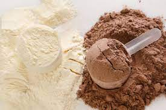
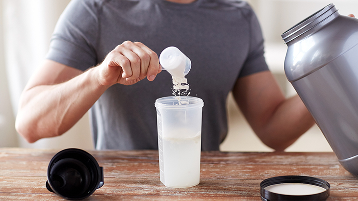

Protein Tozu Nedir?
Protein tozu, en popüler supplement olmayı hak ediyor. Protein tozunun faydası protein içermesidir. Voodoo, hokus pokus bir ürün değildir.
Diyetinizde protein eksik kaldığı zaman almanız gerekebilir. Whey Protein sütten oluşur, sağlıksız bir ürün değildir. Başka üretim yolları da vardır (yumurtadan, pirinçten vb.)
Bütün bunları şimdi detaylı olarak inceleyeceğiz, siz de paranızı akıllıca kullanacaksınız. Pratik bir özet istiyorsanız 5 maddede buyurun:
1- Vücut geliştirmek için ihtiyacımız olan protein abartılı bir miktar değil. Birçoğumuz gereksiz yere “pahalı şeker” almak için maddi manevi sıkıntıya giriyor! Bitkisel ve hayvansal kaynaklardan çok zorlanmadan bu ihtiyacımızı karşılayabiliriz.
2- Karşılayamazsak, özellikle yağ yakma döneminde bu gerekli olacaktır, protein tozu da ihtiyacımızı karşılamamızda yardımcı olacaktır. Yani toz, hayat kolaylaştırır.
3- İhtiyaçtan fazla protein veya protein tozu tüketmek zarardan çok fayda getirir. Sağlıklı insanlarda protein tozunun herhangi bir sağlık sorununa neden olduğu gerçek değil ama herhangi bir sağlık probleminiz varsa, doktorunuzun tavsiyesine göre beslenmeniz daha uygun olacaktır.
4- Protein sadece ette ya da hayvansal kaynaklarda bulunmuyor. Vegan beslenme ile de eksiksiz kas geliştirilebilir!
5- Protein tozu kullanmamız gerekiyorsa bunu istediğimiz zaman kullanabiliriz. Bunun için genç ya da yaşlı olmanız, yıllardır spor yapmış olmanız, antrenmandan önce veya sonra almanız şart değil!
Protein Tozu Ne İşe Yarar? Faydaları Nelerdir?
Proteinin birçok faydası var. Sağlık için olmazsa olmaz ama sporcular için sayacak olursak:
1. Protein turnover’i ve pozitif nitrojen dengesini artırır: Dokularımız yıpranan proteinlerin yerini yeni proteinler sentezleyerek doldurmalıdır. Protein alımı bunu artırır. Yeterli alınmadığında protein sentezi azalacaktır.
2. Proteinin termik efekti yüksektir Yağların sindirimi için %2-3’ü, karbonhidratların sindirimi için %6-8’i harcanırken, proteinlerin sindirimi için getirdiği enerjinin %25-30’u harcanır. Yani fazla yiyorsak, bunu proteinden yememiz istenmeyen kilo alımını azaltacaktır. Düşünsenize 400 kalori aldım sanıyorsunuz ama aslında 300!
3. 3. Glukagonu artırır: Yağ yakımında rol oynayan bir hormon.
4. Growth faktörlerini artırır: Hücrelerin büyümesine yardımcı olan hormonları artırır.
5. Vücudu destekleyen ek gıdaları artırır: CLA, BCAA, kreatin, l-karnitin, l-glutamin gibi faydalı bileşenler protein içeren gıdalarda bulunur. Yeterli protein alındığında bunların dışardan desteklenmesine çok da gerek yoktur. Bu sebeplerden dolayı, protein önemli bir gıdadır.
Protein tozlarının amacı diyete fazladan protein ekleyip kasların protein sentezi için gereken protein miktarını karşılamaktır.
Eğer yemeklerden aldığınız protein yeterliyse, ekstra protein tozu almanın çoğu durumda kas gelişimine ekstra bir faydası olmayacaktır.
Şimdiye dek proteinin faydalarını inceledik, ama protein tozunun ayrı bir olayı var mı buna bakalım.
Protein Tozu Kas Yıkımı Önler!
Spor sonrası amacımız zaten kas dokusunu tahribata uğratmaktır. Aslında bir miktar kas yıkımı söz
konusu oluyor. Tıpkı hücre bölünürken hücre içinde kaos olduğu gibi, oku uzağa fırlatmak için yayı
geriye gerdiğimiz gibi, hayatta bazen yıkımlara ihtiyacımız var ve bu güzel!
Protein tozu bu yıkımı önlemez, ancak bu yıkımın sürmesini önler. Antrenmandan sonra hızlıca
beslenirseniz kas gelişimini destekleyebilirsiniz.
Tabii ki siz antrenman saatine yakın bir protein veya amino asit kaynağı yediyseniz, illa protein tozuna
gerek yoktur.
Bunun yanında protein tozunun esas faydası, yağ yakma diyeti uygularken zaten az kalori aldığınız için
düşük kalori ve yüksek protein içeren bir şeyler almanızı sağlar. Yani makrolarınızı tutturmanızda
yardımcı olur. Yediğiniz birçok şey bunu protein shake kadar kolay yapamaz.
Protein Tozu Kas Yapar! (Hatta Kemik Bile!)
Aslında protein ya da amino asit kas yapar. Ama protein tozu yine belirttiğimiz gibi vücudunuzda o an besin yoksa, kolaylık sağlar.
Bunu nasıl yapar, whey hızlı sindirildiği için antrenman sonrası pozitif nitrojen dengesini sağlamanıza yardımcı olur. Pozitif nitrojen dengesi yeni doku oluşumu için esastır.
Öte yandan kalsiyum iskelet kas sistemi için çok önemlidir ve eksikliği whey protein tüketimiyle giderilebilir. Bir ölçek toz yaklaşık %20 kalsiyum ihtiyacını giderir.
Protein Tozu Yağ Yaktırır!
Tabii ki doğrudan değil, bunu artık anlamış olmanız lazım. Ancak spor, doğru beslenme bir araya geldiğinde yağ yakarsınız.
Protein supplementinin en büyük katkısı, düşük kaloriye rağmen yüksek amino asit içermesidir. Bunu diyetle sağlamak mümkün tabii ancak zor.
Protein Tozu Beslenmeyi, Hayatı Kolaylaştırır!
Aslında en büyük farkı bu, geri kalan her şey zaten balığın, tavuğun, barbunyanın yapamayacağı şeyler değil.
Hayatlar artık çok yoğun, bu yüzden örneğin diyet yemek servisi gibi sektörler büyüdü ve artık her işi kolaylaştırıp kendi işimize odaklanmak istiyoruz. Daha iyi sporcu olmamız için aslında bu bir yerde elzem oluyor, bu başka bir sohbetin konusu.
Eğer kendinize yemek hazırlamayı sevmiyorsanız, kolay ve lezzetli şekilde protein alamıyorsanız, lezzetli bir shake ile ihtiyacı karşılamak kadar güzeli var mı?
Toz ile basit tarifler de yapabilirsiniz, yüksek kalori ile hızlı kilo almak kolay olur.
Öte yandan ketojenik diyet gibi, vejeteryan diyeti gibi nispeten zor disiplinler için de protein tozları yardımcı olabilir. Veganlar için bile bitkisel tozlar bulunuyor.
Protein Tozu Nasıl Kullanılır?
Miktar olarak protein tozunu günlük ihtiyacınızı tamamlamak için gereken ne kadarsa, o kadar alabilirsiniz. Fazla protein almanın da bir zararı yoktur.
Spor yapılan günlerde protein ihtiyacı diğer günlerden farklı olmayacaktır, çünkü spor yapmadığınız gün de kaslarınız yenilenmektedir. Hesap zaten buna göre yapılır.
Tozu kutusunda, paketinde yazdığı gibi suya veya biraz yüksek kalori istiyorsanız süte karıştırıp içebilirsiniz. Oldukça basit.
Antrenmandan önce almanız gerekirse su ile almanızı öneririz. Süt özellikle antrenman öncesi çok önerilecek bir şey değil, birçok sebepten dolayı. Sütten oluşan whey için de aynısını söyleyebiliriz. Antrenman öncesi zaten aç olmanızı tavsiye ederiz, ayrı bir sohbet.
Protein Tozu Ne Zaman Kullanılmalı?
Whey protein hızlı sindirilen bir proteindir. Kazein protein ise biraz daha yavaş sindirilir. Proteinin veya protein tozunun zamanlamasının çok önemli olduğu söylenir, fakat bu önerme çoğu zaman geçerli değildir.
Eğer gün içerisinde öğünlerinizi düzenli aralıklarla alıyorsanız ve günün sonunda bir şekilde protein ihtiyacınızı karşılayabiliyorsanız, proteinin hızlı veya yavaş sindirilmesi fark oluşturmaz. Bu yüzden illa da antrenmandan önce – antrenmandan sonra almanız gerekmez! Az protein içeren bir öğünde de, ara öğünde de alabilirsiniz!
Fakat gün içerisinde protein ihtiyacınızı karşılayamadığınız durumlarda veya intermittent fasting tarzı bir diyetle aç antrenman yaptığınız zamanlarda proteinin antrenmanın ardından hızlı sindirilecek şekilde alınması fark oluşturabilir.
Fakat gün içerisinde protein ihtiyacınızı karşılayamadığınız durumlarda veya intermittent fasting tarzı bir diyetle aç antrenman yaptığınız zamanlarda proteinin antrenmanın ardından hızlı sindirilecek şekilde alınması fark oluşturabilir.
Ayrıca kimi araştırmalar yaş ilerledikçe daha hızlı sindirilen protein tercih edilmesi gerektiğini
öneriyor.
Spora yeni başladıysanız protein tozundan önce doğru antrenman programı ve beslenme programı elde edin.
Ancak 3 ay sonra, 6 ay sonra gibi bir zaman sınırlaması yok, isterseniz spor yapmadan da protein
ihtiyacını karşılayabilirsiniz. Bunu bir zamana bağlamaya, toz kullanmak için bir hak kazanmanıza gerek
yok.